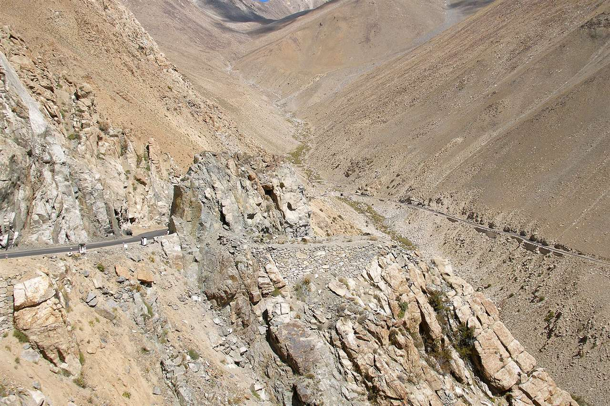
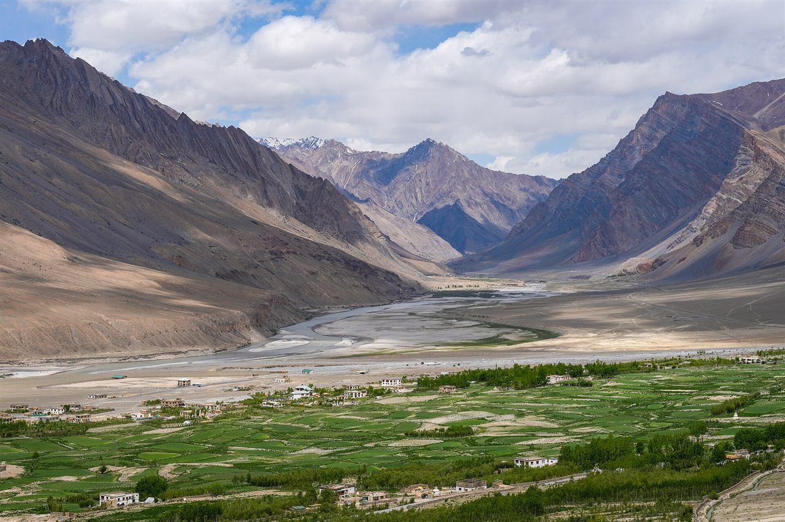
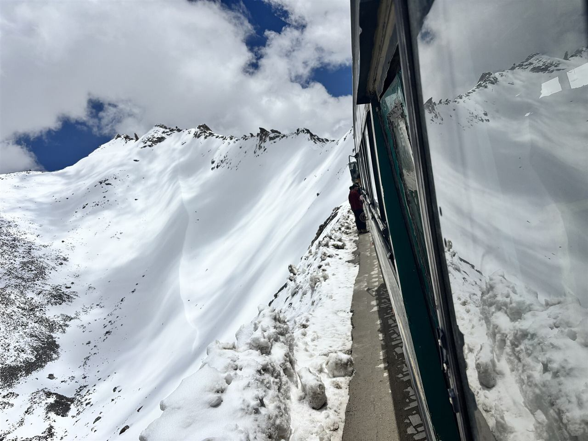
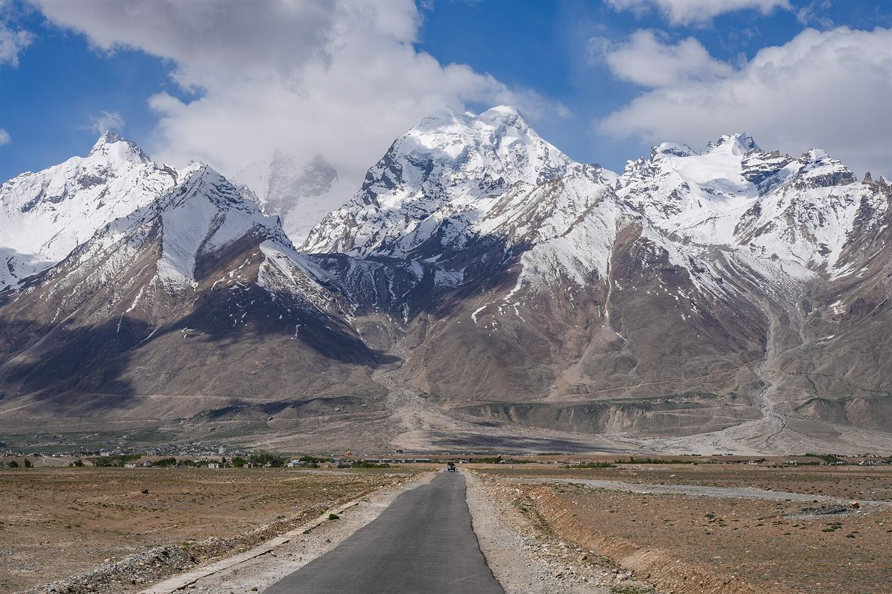

Motorcycle journeyChallengingLadakh Motorcycle Adventure
A riding itinerary for licensed, experienced riders, with full support terms agreed first.
✓ Acclimatisation time✓ Supported riding proposal
₹36,000guide / person
View itinerary Ride through Ladakh’s highland scenery on routes planned for experienced, licensed riders, with arrival rest and time to discuss support and rental arrangements.
Find your journey ↓

Motorcycle journeyChallengingA riding itinerary for licensed, experienced riders, with full support terms agreed first.

Motorcycle journeyChallengingAn extended riding enquiry with a detailed route and rental basis to be agreed.

Motorcycle journeyChallengingA demanding riding proposal with route-specific support and escape plans confirmed first.
ⓘ Guide prices for planning, subject to availability and supplier confirmation. Your written quote confirms the total, taxes, sharing basis, and exact inclusions.